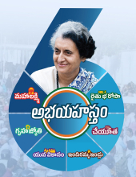
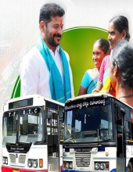
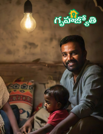
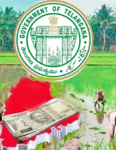
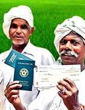

Sri Anumula Revanth Reddy
Hon'ble Chief Minister
తెలంగాణ సాంస్కృతిక సారథి
Telangana Samskruthika Saarathi
Sri Bhatti Vikramarka Mallu
Deputy Chief Minister
Jupally Krishna Rao
Sri Bhatti Vikramarka Mallu
Jupally Krishna Rao
తెలంగాణ సాంస్కృతిక సారథి కళాకారులు రాష్ట్ర వ్యాప్తంగా గడిచిన జనవరి నుంచి ఆగష్టు 2024 లలో ప్రభుత్వ సంక్షేమ మరియు అభివృద్ధి పథకాలను గ్రామ గ్రామాన ప్రతి రోజు ప్రచారం చేస్తూనే దిగువ తెలిపిన ప్రత్యేక కార్యక్రమాల (Flagship Schemes ) కు సంబంధించిన చైతన్య గీతాలను రచించి, వేదికల మీద, జిల్లాలలోని గ్రామాలలో పాడి ప్రచారం చేయడం జరుగుతుంది.





ఇవేకాక, కైట్ & స్వీట్ ఫెస్టివల్, గణతంత్ర దినోత్సవ వేడుకలు, పద్మ అవార్డు గ్రహీతల సన్మాన కార్యక్రమం, శ్రీ పాద రావు గారి జయంతి, ఓటర్ అవగాహన సదస్సు, ఈశ్వరీ బాయి వర్ధంతి, నాగోబా జాతర, ఆదిలాబాద్, శ్రీ సమ్మక్క – సారక్కల జాతర, మేడారం, మహా శివరాత్రి ఉత్సవాలు, వేములవాడ, బాబు జగజ్జీవన్ రావు జయంతి వేడుకలు, డా.బి.ఆర్ అంబేద్కర్ జయంతి వేడుకలు, తెలంగాణ రాష్ట్ర అవతరణ పదేండ్ల పండుగ, డా.దాశరథి కృష్ణమాచార్య శత జయంతి ఉత్సవాలు, జాతీయ చేనేత దినోత్సవం, శ్రీ సర్దార్ సర్వాయి పాపన్న గౌడ్ 374 వ జయంతి ఉత్సవాలు, జాతీయ క్రీడా దినోత్సవం, ఎడ్ల పొలాలమావాస్య, ప్రజా ప్రభుత్వంలో జర్నలిస్టుల సంక్షేమం, ఇండియన్ ఇన్సిట్యూట్ ఆఫ్ హ్యండ్లూమ్ టెక్నాలజీ, కీ.శే. శ్రీ పొన్నం సత్తయ్య గౌడ్ గారి 14 వ వర్ధంతి, ఆచార్య కొండా లక్ష్మన్ బాపూజీ 12వ వర్ధంతి, ప్రపంచ పర్యాటక దినోత్సవం, కీ.శే శ్రీ జి.వెంకటస్వామి గారి 95వ జయంతి, SARAS Fair – 2024, మహర్షి శ్రీ వాల్మీకి జయంతి ఉత్సవాలలో తెలంగాణ సాంస్కృతిక సారథి కళాకారులు తమ ఆట పాటలతో ప్రేక్షకులను అలరించారు.
2023 డిసెంబర్ నుండి నేటి వరకు నూతన ప్రజా ప్రభుత్వ ఆశయాలకు అనుగుణంగా రూపొందించిన వినూత్న ప్రజా సంక్షేమ పథకాలపై “ప్రగతి పథంలో ప్రజాపాలన” పేరుతో 80 పాటల సంకలనాన్ని రూపొందించడం జరిగింది.